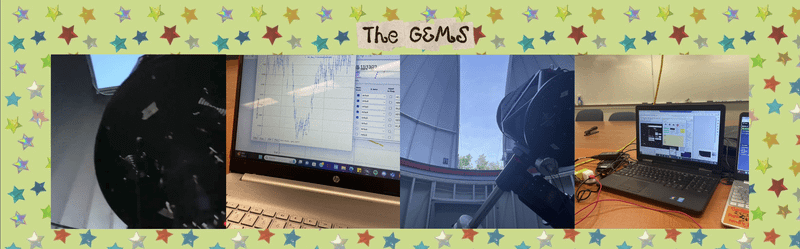
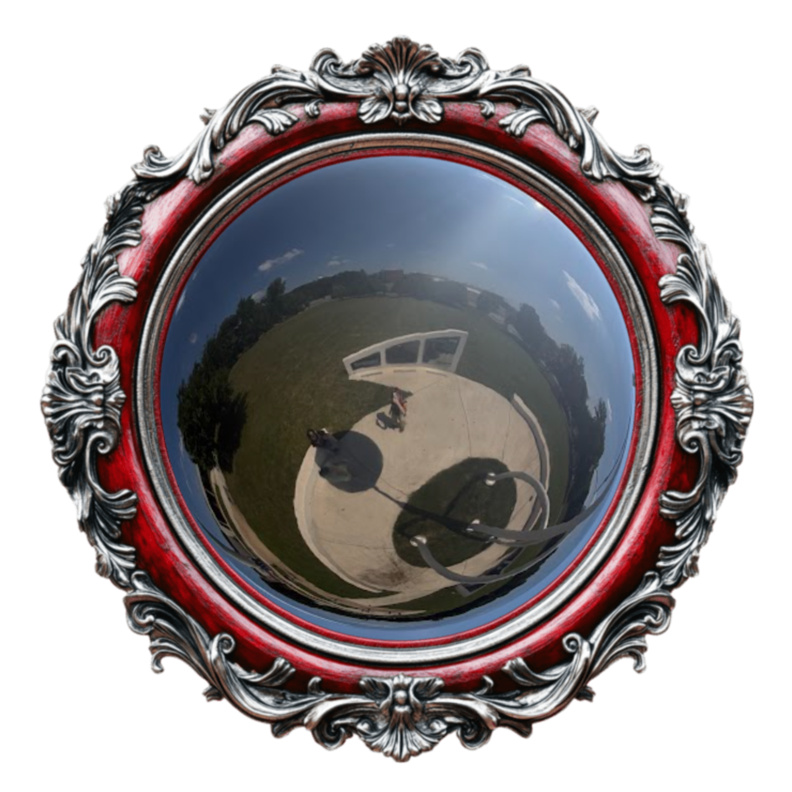

aubrianne e. thoms

“If you wish to make an apple pie from scratch, you must first invent the universe.
-Carl Sagan

from the center of the universe to the space coast
Hello! My name is Aubrianne (Aubrie) Thoms, and I am currently a graduate student studying for my master's degree in space science at the Florida Institute of Technology. I recieved my Bachelor's of Science in 2025 from Randolph-Macon College, where I majored in physics and minored in astrophysics, mathematics, and asian studies. Born and raised in a small county in Virginia called King George, I spent most of my childhood playing alongside the banks of the Potomac River. My curiosity for nature was nurtured there, where I would collect and identify animal bones, tree leaves, rocks, and whatever else I could get my little sticky fingers on. These days I still get my hands dirty, but it is a smidge less so from beach sand and much more from tinkering with equipment.

Randolph-Macon College is a quiet little train town in Ashland, Virginia, where I spent four years bouncing between a multitude of classes, extracurriculars, and campus jobs. Some of my most memorable classes include topics such as death and memorialization, the history of mathematics (truthfully I really struggled in this one, Babylonian long division is much more counterintuitive than you would expect), and the relationship of the depiction of food in art with American politics. My position in student government as VP of External Relations countenanced a moment to hold my bagged blood to donate to the American Red Cross, in addition to other unforgettable happenstances such as volunteering to sink in the camptown festival dunk tank. While I was VP of the R-MC Society of Physics Students chapter, we would perform fun demos in our vacuum chamber at the expense of myriad marshmellow peeps. Between my daytime gig at the EDGE career center and starry nights spent at the observatory public viewings, I was playing instruments (oboe, clarinet, guitar), building theatre sets, or meditating depending on the semester! So many cherished memories were made with exceptional people during my time there.

Presently, I reside on the space coast in Melbourne, Florida. Exoplanets remain my primary research interest, although I pivoted away from the observational side. Computational planetary modeling is my focus, as I use 3-dimensional circulation models to poke and prod at different habitibility considerations influenced by exoplanet atmospheres. I am a member of the Ortega observatory outside of class, where I participate on the social media and weather station teams. Ortega is definitely one of the biggest highlights of my time at Florida Tech! Lots of neat opportunities are facilitated by them; take setting up telescopes on the lawn of the Kennedy Space Center for instance. Whenever I'm not occupied by classes, research, etc., my free time consists of an array of interests (I'm a big movie geek and enjoy seeing films in theater!), eating tirimisu on the beach with friends, and watching the occasional rocket launch.

Although I'm a bit of a mad scientist, I have an artsy fartsy side to me! I read books (horror/gothic and popular science are my favorite genres), sketch, collage (e.g., the background to this webpage---it's made from old APS magazines), play instruments, and sew/tailor clothes. Additionally, I attempt to get my daily dose of exercise in by going to the gym, nature walks, yoga, pickleball, or rollerskating (whenever the weather permits).

Music is my livelihood! I jam out to Fall Out Boy, Sparks, N.E.R.D., Justice, just to name a few. My last concert was Hayley Williams out in West Palm Beach, but over the years I have also watched The Garden, Ghost, TWRP, Electric Six, and Muse live too. Not to brag: I've crowdsurfed once!

I am anything but a homebody...traveling, whenever I have the chance, is possibly my favorite pastime! From strange exhibits at museums (the VA science museum had one for poison in wildlife and uses thoughout history!) to iconic natural landmarks (e.g., my beloved everglades), I can never turn down the option of seeing somewhere new.
she blinded me with science

Pictured above is Keeble's halloween event in 2024! I painted a cardboard stand for people to take pictures with for our instagram page. We decorated the entire observatory in fake spider cobwebs for our event!!

For two years, I was the lead senior student observatory assistant at Keeble Observatory at R-MC. My responsibilities comprised of organizing public viewings, operating the main telescope, and frequently updating the social media. I also drew some stickers to pass out at our open houses! Our events were always fun, as we sometimes would hold paint nights, or provide hot cider, cake, snacks, etc., depending on the occasion.

Keeble visitors would leave the sweetest notes. One time a camera crew drew out a little thank you when they stopped by to film the observatory for R-MC's new advertisement. It was a pleasure to work at Keeble and meet people from all over!

The Ortega observatory in Melbourne, Florida, does a lot of outreach with different groups of students, ranging from homeschoolers to those living outside the country. Another notable aspect of Ortega is its partnership with the Kennedy Space Center. A handful of times throughout the semester, several of the members will go to the visitor complex to partake in tabling, conferences, setting up telescopes for public viewings, and more. Kennedy Under the Stars is one of these events: we traveled to the visitor complex to set up a few of the telescopes for visitors to gaze through!
caution! space nerds at work

Previously, I was using the aerosol extension of a 3-dimensional general circulation to investigate the behavior of dust in the exoplanet atmospheres


internships


The Schapiro Undergraduate Research Fellowship is a 9-week summer internship program spearheaded by Randolph-Macon College. My research focus was to identify whether or not the Keeble telescope was capable of detecting transiting exoplanets. During this period I learned how to:
- utilize a CCD
- perform telescope maintenance, such as aberration tests and cleaning (e.g., the telescope mirrors, CCD filters, etc.)
- write python scripts for data calibration
- navigate AstroImageJ software
- create transit curves
- take flatfield and dark images
- automate the dome to match the telescope's movements
undergraduate conferences

- Senior Symposium at Randolph-Macon College --- Poster: "Detecting Optical Transients with the Keeble Telescope" --- May 2025
- American Association of Physics Teachers at Jefferson Lab --- Poster: "Multi-Messenger Astronomy: Follow-up of a Short Gamma-ray Burst" --- May 2024
- Junior Symposium at Randolph-Macon College --- Oral Presentations: "Fabrication and Spectroscopic Analysis of Solid State Tesla Coils" and "Spectroscopy of Gas Lamps using a Spectrometer and Prism" --- May 2025
- Society of Physics Students Zone Meeting at Virginia Tech --- Poster: "Detecting Exoplanet Transits with the Keeble Telescope" --- March 2024
- APS Conference for Undergraduate Women and Gender Minorities in Physics at West Virginia University --- Poster: "Detecting Exoplanet Transits with the Keeble Telescope" --- January 2024
master's conferences

I presented my poster at the UF Astraeus Space Institute KSC Space Summit titled "A Hazy Shade of Winter: Aerosol Circulation and the Antistellar Warming of Tidally-locked Exoplanets with Low Pressure Atmospheres", which was a culmination of my old reseach with aerosols and my new thesis project. I toured four laboratories: Electrostatics and Surface Physics, Granular Mechanics and Regolith Operations, Applied Physics, and Applied Chemistry. Really cool!

At the 23rd Annual Meeting of Asia Oceanic Geosciences Society in Fukuoka, Japan, I presented my aerosol circulation research as a poster titled "A Hazy Shade of Winter: Aerosol Circulation and the Antistellar Warming of Tidally-locked Exoplanets with Low Pressure Atmospheres". I worked as a student volunteer and aided with the operations of the poster symposium. Sightseeing was phenomenal---we visited the Reclining Buddha statue and the Dazaifu Tenmangu shrine. Pictured is me rubbing the head of the sacred ox statue Goshingyu, dedicated to Sugawara no Michizane (Japan's god of learning), for academic prowess...do I seem wiser to you? Hopefully so!
take me to your leader literature

Sed tempus urna et pharetra pharetra massa massa ultricies. Porttitor rhoncus dolor purus non enim praesent. Id aliquet risus feugiat in ante metus dictum.
the past, present, and an exoplanet-sized future


Sed tempus urna et pharetra pharetra massa massa ultricies. Porttitor rhoncus dolor purus non enim praesent. Id aliquet risus feugiat in ante metus dictum.
contact me!

|